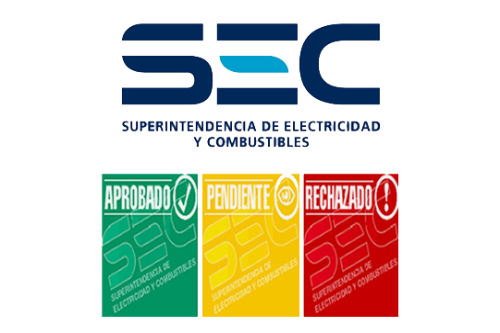
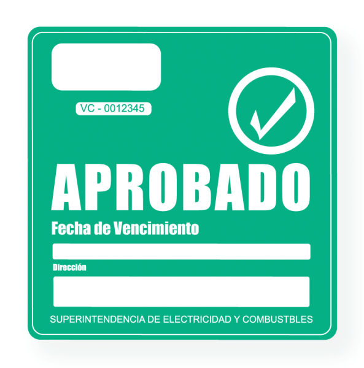
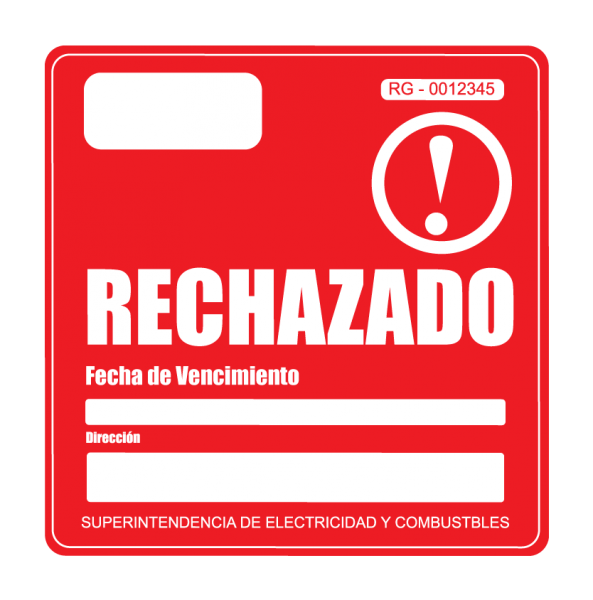
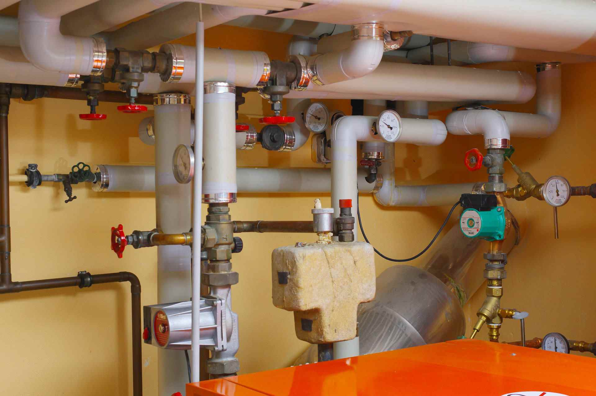
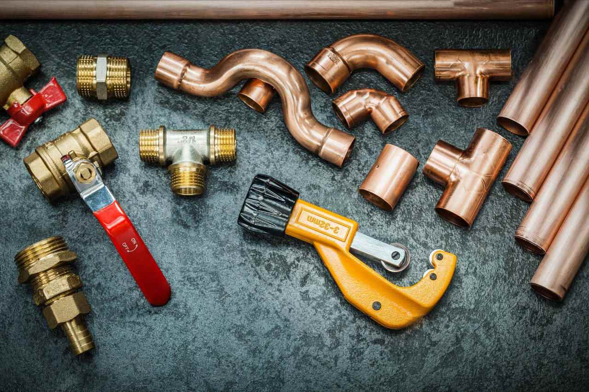

Normalización Para Sello Verde
El Sello Verde es una certificación que entrega la Superintendencia de Electricidad y Combustible, y es obligatorio en todos los condominios que tengan instalaciones de gas, incluyendo los que solo utilizan este combustible en espacios comunes. Los edificios que fueron construidos con unidades que solo cuentan con servicio eléctrico; pero tienen un sistema de calderas a gas para el agua caliente, igual deben tramitar el Sello Verde. Esta certificación indica que todas las instalaciones de gas cumplen con la normativa vigente; es decir, que no presentan defectos en sus artefactos individuales, colectivos y obras complementarias.
- Nosotros nos encargamos de realizar la inspección individual y colectiva de cada artefacto a gas, así como también del resto de las instalaciones del condominio.
- En dependencia del resultado de cada inspección, se emite un certificado, donde se detalla es estado de la instalación y/o sus artefactos.
- En caso de encontrarse defectos en las instalaciones y/o artefactos, también podemos realizar la reparación, en dependencia del tiempo y del calendario planificado.
Sus instalaciones son seguras y se debe volver a realizar una Inspección Periódica en dos años más.
Sus instalaciones presentan deficiencias serias que deben ser reparadas en el corto plazo.
Sus instalaciones son peligrosas y pueden poner en riesgo su vida.
Cambio Y Reparación De Grifería
Tener los grifos y las llaves de agua en mal estado, provoca sumideros, pérdidas, corrosión en paredes y tuberías, y otros muchos problemas. La corrosión y oxido en las tuberías, es un problema que se debe evitar siempre, ya que resulta mucho mas difícil y costoso reemplazar o reparar un grifo cuando la tubería está dañada.
Si usted tiene cualquier problema relacionado con sus redes de agua, nosotros contamos con todos lo elementos para resolver su problema. Realizamos la reparación de grifos, cambio de grifos. En general reparamos cualquier daño o problema que tenga su red de agua potable.
- Todos nuestros trabajos se realizan de la forma menos invasiva posible. Para ello contamos con herramientas de detección que nos permiten identificar previamente el lugar o punto de fallo.
Redes De Agua Potable, Alcantarillado Y Gas
Las instalaciones y/o reparaciones de las redes de agua potable, redes de alcantarillado, y redes de gas, son tareas delicadas y que requieren planificación, conocimientos, y habilidades técnicas manuales. La correcta planificación e instalación de las redes de agua potable, garantiza que no ocurra la pérdida de presión, y evita la aparición de fugas y sumideros en el futuro. Las redes de alcantarillado son muy importantes para la higiene y la eliminación de residuos del hogar, por lo que estas siempre deben funcionar correctamente en todo domicilio. En el caso de las redes de gas, estas son muy importantes y a la vez las mas delicadas, ya que cualquier fallo en las mismas puede comprometes la vida de las personas.
- Nosotros realizamos la instalación y reparación de las redes de agua potable, redes de alcantarillado, y redes de gas. Contamos con todas las certificaciones, experiencia y habilidades para realizar estos trabajos.
- Realizamos toda la instalación de la red de agua potable.
- Instalación de tuberías nuevas, o reparación de las existentes.
- Instalación de grifos nuevos, o reparación en caso de ser posible.
- Trabajamos con materiales de calidad, a la vez que nos ajustamos al presupuesto del cliente.
- Instalación nueva, reemplazo, o reparación de las tuberías existentes en su alcantarillado.
- En caso de tener problemas de obstrucción en su alcantarillado, también realizamos el servicio de destape de alcantarillado, el cual puede detallar mas abajo.
- Instalación de toda la red de gas, ya sea para gas licuado, como para gas natural.
- Reparación de instalaciones de gas dañadas.
- Detención de fugas de gas, reparación de artefactos a gas.
Detección Y Reparación De Fugas
Cuando exista una fuga de gas en su hogar, negocio, edificio o cualquier tipo de vivienda, se recomienda no encender aparatos eléctricos como ampolletas, enchufes o cualquier tipo de aparato eléctrico ya que estos pueden crear arcos que podrían provocar una explosión debido a la acumulación de gas en la atmósfera.
Para detectar estas fugas, disponemos de detectores de gas tanto en interior como en exterior. Hay fugas de gas que no pueden ser detectadas por máquinas de ultrasonido, cámaras termográficas o gases trazadores. Para estos casos, disponemos de máquinas de prueba de hermeticidad de gas y agua, y así podremos saber si las instalaciones de agua y gas tienen fugas.
- Para el caso de las fugas de agua, muchas veces se pueden apreciar a simple vista. En el caso de que estas fugas de agua no sean visibles, contamos con máquinas de ultrasonido para su detección, generalmente en interior de paredes.
- Un descuido por parte del usuario.
- Un defecto en artefactos alimentados con gas.
- Un defecto en la instalación de las tuberías de gas.
- Ventila la casa: Abrir puertas y ventanas para que el flujo de aire despeje el gas.
- Verificar que todas las llaves están cerradas.
- Informa a tu proveedor de gas, y contacta a un técnico autorizado de inmediato.
- Si la fuga es severa, evacua la vivienda y llama a los bomberos.
- Cierra la llave de paso de gas cuando salgas de casa.
- Revisa el piloto de la caldera o calefón de vez en cuando.
- Asegúrate de cerrar los quemadores de la cocina y la llave del horno.
- Solicita nuestro servicio de revisión preventiva una vez al año.
- Instala una alarma de monóxido de carbono.
Instalación Y Mantención De Calefón, Cocinas, Etc.
La instalación y mantención de un calefón o cocina a gas es un procedimiento delicado y peligroso, ya que la mala manipulación de artefactos a gas puede provocar incendios o explosiones. Por tal motivo, este tipo de trabajos deben ser realizados por personal certificado por la SEC. Ya que así se garantiza que el técnico autorizado conozca todas las medidas de seguridad y procedimientos de trabajo para efectuar estas actividades.
Instalación De Calefón
Realizamos la instalación de su nuevo Calefón, si es la primera vez, entregamos recomendaciones precisas y seguras de posibles posturas para la instalación.
Podemos hacer movimientos temporales de su instalación existente, en caso que se encuentre realizando labores de construcción y reparación de su vivienda, y necesite que su instalación de gas continúe funcionando.
Mantención De Calefón
Es importante mantener en buen estado los equipos que funcionan a gas. El deterioro de estos puede ser peligroso, causando accidentes y poniendo en peligro la vida de las personas y la infraestructura donde están instalados.
Nosotros realizamos la revisión y mantención de su equipo, remplazamos componentes dañados, y garantizamos su funcionamiento de forma segura.
Reparación De Calefón
Si su calefón presenta algún problema crítico, o detecta funcionamiento anormal del mismo, no continúe utilizándolo, ya que los daños pueden ser mayores.
Contáctenos de inmediato, y nosotros llevaremos a cabo la completa reparación de su calefón. Típicamente se realiza la reparación a domicilio, pero en dependencia del daño, esta puede ser en nuestro taller.
Instalación De Cocinas
La instalación de una cocina a gas puede parecer una tarea fácil, pero esta se debe hacer con extrema precaución. Cualquier error de instalación puede poner en peligro la vida de las personas, ya que esta se encuentra generalmente en el interior del domicilio.
Por su seguridad, contacte a un técnico SEC autorizado para realizar esta instalación. Nosotros contamos con todos los materiales y herramientas necesarias para realizar esta instalación.
Conversión De Cocinas
Las cocinas a gas se fabrican para funcionar con un tipo de gas especifico, el cual puede ser "Gas Licuado", o "Gas Natural". Conectar su cocina a una instalación de gas diferente a la que indica la ficha técnica, puede ser muy peligroso, y esta no funcionará correctamente.
Para lograr que una cocina funcione de manera segura con un tipo de gas diferente, se debe realizar un proceso de conversión, ya que cada gas funciona a una presión diferente.
Nosotros realizamos la conversión de su cocina, reemplazamos los componentes necesarios, y garantizamos el funcionamiento de su dispositivo de forma segura.
Trabajamos en varios materiales (Cobre, PVC, PPR, PEX, CPVC), garantizamos calidad y seguridad en todo trabajo.
En la actualidad, el cobre es considerado como uno de los mejores metales para cualquier tipo de instalación. Son capaces de soportar las más duras condiciones de presión y temperatura. Se adaptan a cualquier estructura y espacio disponible. Poseen una excelente resistencia a la corrosión. No forman costras voluminosas de óxido u otros compuestos que pueden obstruir el paso de los fluidos. Debido a que el cobre es un metal no inflamable, ante un posible incendio, las tuberías no propagan las llamas, ni se consumen. El cobre es un excelente conductor de calor. Por ello, es utilizado en sistemas de calefacción y refrigeración.
El PVC, ampliamente conocido como policloruro de vinilo, este producto es con diferencia el que menos depende del petróleo. Siendo muy flexible y fácil de trabajar, ahora mismo se convierte en el plástico de menos coste y mantenimiento del mercado. Es un producto fácil de mecanizar; puede doblarse, moldearse e incluso soldarse a otros materiales. Las tuberías de PVC son aptas para utilizar en proyectos donde se requiere una máxima higiene, como en las tuberías para conducir agua potable. Además, destaca por tener una gran capacidad aislante y ser un material de larga vida útil, durabilidad y resistencia.
En la actualidad, el cobre es considerado como uno de los mejores metales para cualquier tipo de instalación. Son capaces de soportar las más duras condiciones de presión y temperatura. Se adaptan a cualquier estructura y espacio disponible. Poseen una excelente resistencia a la corrosión. No forman costras voluminosas de óxido u otros compuestos que pueden obstruir el paso de los fluidos. Debido a que el cobre es un metal no inflamable, ante un posible incendio, las tuberías no propagan las llamas, ni se consumen. El cobre es un excelente conductor de calor. Por ello, es utilizado en sistemas de calefacción y refrigeración.
El polietileno reticulado o PEX es un material totalmente inocuo, capaz de garantizar la calidad del agua y la conservación de todas sus propiedades. Su peso es reducido debido a la densidad del material, de esta forma un rollo de 100 metros de longitud de tubo de 16*1.8 mm no supera los 10 kilogramos. La vida útil del polietileno reticulado oscila entre los 25 y 50 años, por lo que es considerado un material de alta durabilidad. También puede resistir una temperatura hasta 110 grados centígrados aproximadamente. los productos elaborados de este material no sufren desgaste por la corrosión.
El policloruro de vinilo clorado (CPVC) es una tubería de plástico que se usa en las líneas domésticas de suministro de agua y por lo general se instala en diámetros de 3/4 pulgada o 1/2 pulgada (1,9 o 1,25 cm). El CPVC es muy resistente a los productos químicos domésticos y no se arruina con el tiempo. El CPVC no se quemará a menos que entre en contacto directo con una fuente de calor externa. También puede soportar aguas corrosivas a temperaturas más altas que el PVC convencional y, por lo tanto, se utiliza tanto en construcciones comerciales como residenciales.
Destapes Generales
Realizamos servicio integral de destapes de alcantarillado, un problema muy común que sucede cuando las tuberías o cañerías se encuentran en mal estado, o no reciben el cuidado requerido.
Destapamos Deságüese de Baños, Lavaplatos, Duchas, y cualquier tipo de tubería o cañería en general. Solucionamos cualquier tipo de obstrucción que presente.
- Para realizar el servicio de destape de alcantarillado, contamos máquina de destape, y amplia experiencia en este tipo de actividades. Ademas gracias a nuestra experiencia en Gasfitería, ofrecemos un servicio integral, cambiando o reparando las tuberías o cañerías que se encuentren dañadas.
Limpieza De Red De Agua Caliente
Evita la acumulación de sarro en las tuberías, y por consiguiente la pérdida de presión.
Las tuberías o grifos obstruidos provocan una reducción en el flujo de agua, y esto a su vez un aumento en la temperatura de salida del Calefón. Lo cual resulta incómodo e ineficiente.

- En el servicio se incluyen todos materiales y herramienta para garantizar el éxito de la limpieza de las tuberías.
- Utilizamos productos de limpieza de alta calidad, este actúa como desinfectante y acido a la vez. Eliminando toda sociedad y sarro dentro de la tubería, y en los grifos.